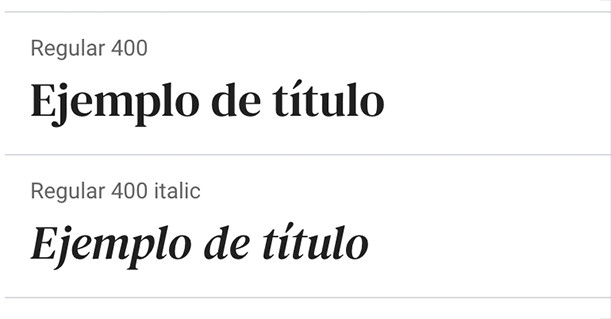
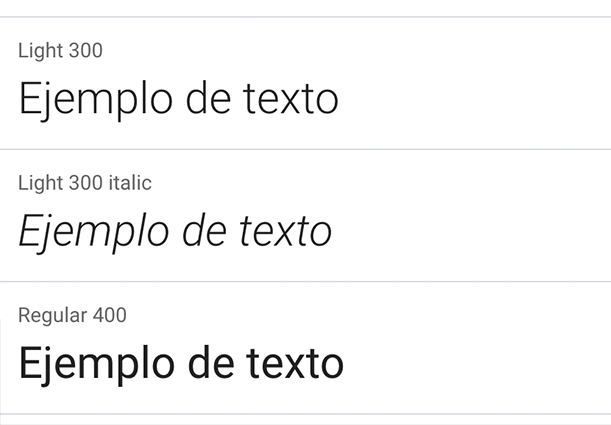

Se utilizaron las iniciales GyA entrelazadas utilizando una tipografía serifa moderna para transmitir formalidad, tradición, delicadeza, y refinamiento.
En esta propuesta, la letra "y" se dibuja con las letras G y A, agregando un detalle en la A
Inspirado en el onyx
Utilizado en tarjetas de presentación y publicidades en fondos claros
Utilizado en tarjetas de presentación y publicidades en fondos oscuros
Utilizado en papelería comercial en fondos claros
Utilizado en papelería comercial en fondos oscuros
Para títulos se propone usar la tipografía DM Serif text, que es clásica, de terminaciones finas y elegante. La licencia es gratuita.
Para textos se propone usar la tipografía Roboto light, de fácil lectura y delicada. La licencia es gratuita.
En toda esta sección se utilizaron ambas tipografías para ver su aplicación.